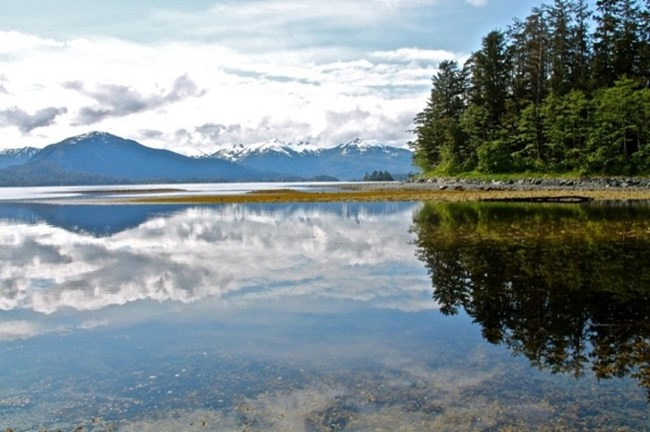

The picture below shows a picture of a forest and a huge lake surrounding the forest and with mountains this website will talk about climate change and will have news and pictures and how we can better the enviorment and the earth.They are alot of ways we can better the earth and to prevent climate chnage from getting worse like, use less fossil fuels, use your power in your home with renewable energy, invest in energy-efficent appliances, and to pull out plugs if you are not using them. These types of things can better the enviorment and the earth and to prevent cliamte change from happening.
This picture was search through creative commons and through google images, thanks to nps.gov for the picture. The link for theis picture is down below.
Five things to prevent climate change
1.Reduce water waste
2.Invest in energy-efficient appliances
3.Wash clothes in cold water
4.Recycle Your Clothes
5.Hang-dry your clothes instead of using the dryer